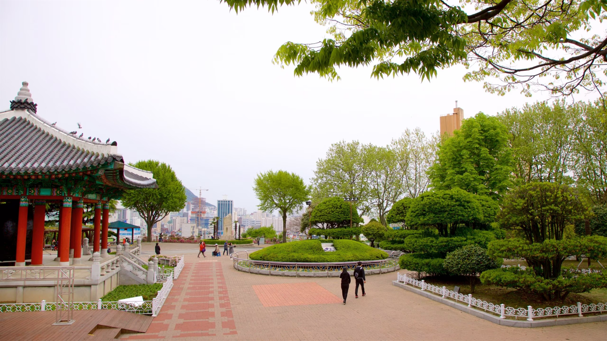

Para os amantes de história
Descubra 3 destinos imperdíveis em Busan
A cidade de Busan é repleta de tesouros culturais que oferecem um mergulho na história e tradições da Coreia do Sul.
Com templos milenares, parques deslumbrantes e vistas espetaculares, estes três destinos são paradas obrigatórias.

1. Templo Haedong Yonggungsa
Construído em 1376, este templo budista está localizado à beira-mar e oferece uma vista única do oceano.
É um dos poucos templos na Coreia situados à beira da água.
Paz
História

2. Templo Beomeo-sa
Localizado no Monte Geumjeongsan, este templo é um dos mais importantes da Coreia do Sul e preserva
tradições budistas há séculos.
Paz
Cultura

3. Parque Yongdusan
Um dos pontos mais famosos de Busan, com jardins bem cuidados, monumentos históricos e a famosa Torre de Busan.
Natureza
Cultura